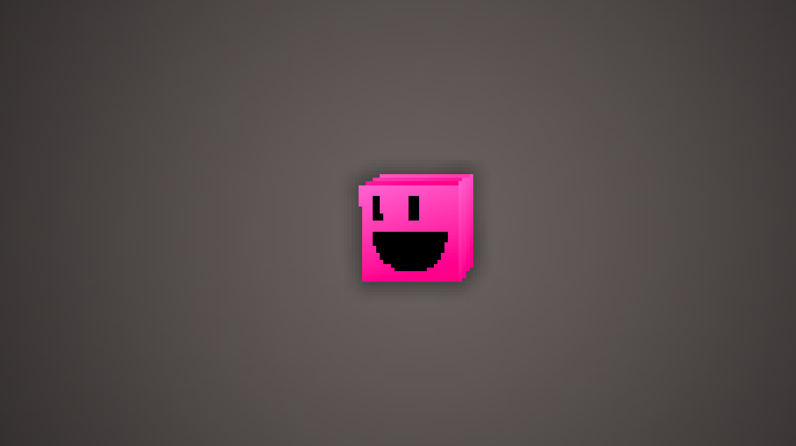
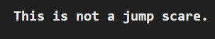
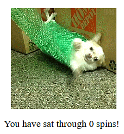
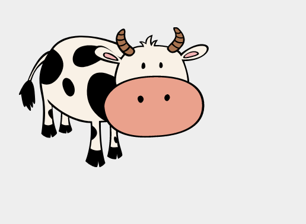
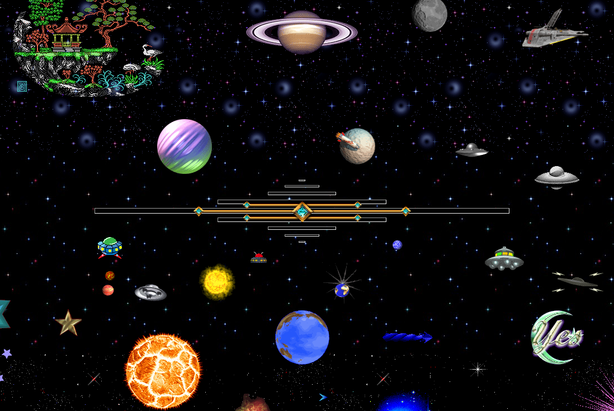
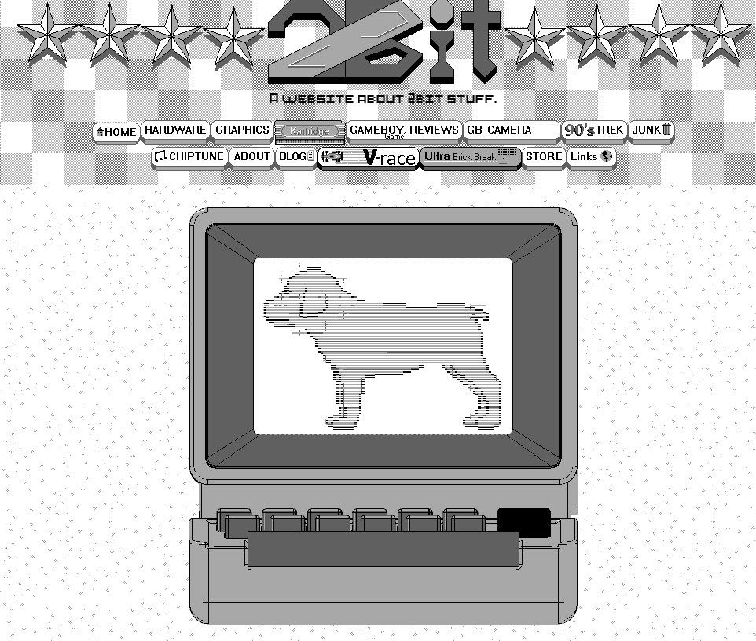
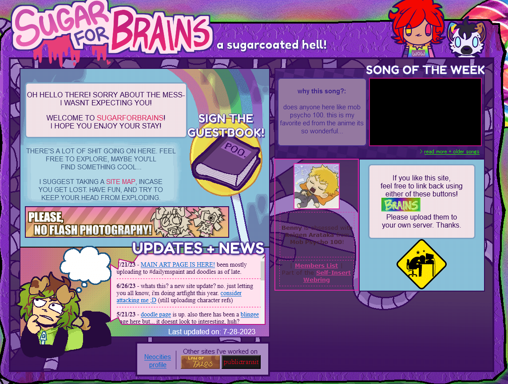
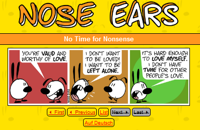
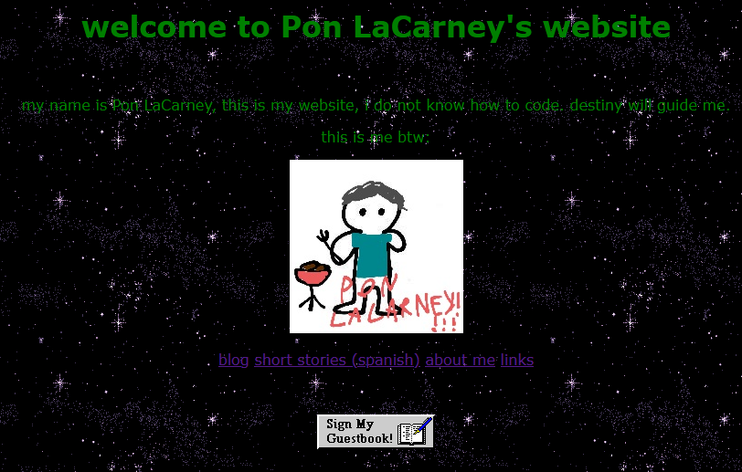
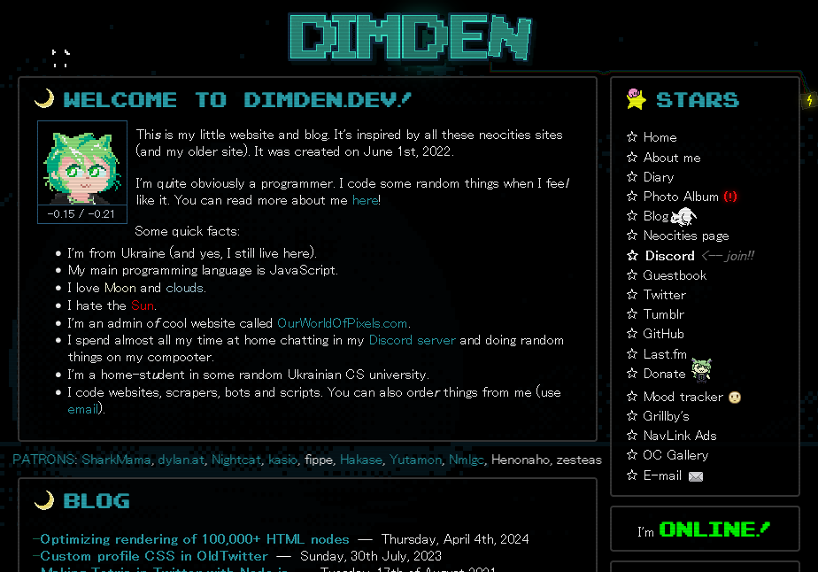

He is just simply a friend. He is a very cool cuboid to hang out with.

Go here if ya want a jumpscare 100% guarenteed

It is simply a dog spinning. What more can you ask for?

You just gotta find the cow. He is a shy fellow I must say.

It is a project which tries to preserve not just Flash games and animations. It is preserving literally anything that was made to run on a browser plugin. It is a great project and if you want to play old flash content, this is for you!

The website is still up after all of this time. So if you want to see a website straight from the 90s. Go here!

Remember what I said about the 1996 Space Jam website. Well crank up the 90s scale up to an 11 because this is a site to behold! It illustrates what made the 90s web such a unique time in the history of the web and I just adore it for what it stands for! I reccomend you check this out if you want to see what the 90s web is all about!

It is quite a unique website by what it is about. It is based only upon four colors: White, Black, and 2 inbetween colors. The website was made by a person who really likes this kind of aesthetic and I see it as a outlet for his creative endevors. It is a really great website. It even has a guestbook if you want to say hello.

It is also a very unique website. It is a personal space for the creator of the website to express themself through a awfully sugary pastel aethetic. It has a really unique thing going and I like the direction on where it is going. It also has a guestbook like the 2bit website so you can say hello.

This goes into the list of unique neocities websites. This is a website for a comic strip that contains funnyness about anything from crypto to corperate buisnesses to basic ways of life. It is a cool strip. They have over 700 comics so they have a pretty big library already. So check it out!

I found this website because the creator followed this website as I was reverting the Halloween theme (this is written 11/1/2024). It is just a personal website, like this one. I just thought it was neat and I think it is an example of what we should have more on the internet today.

I found this website with Neocities' browsing feature. Dimden has made many cool things such as a Neocities alternative called "Nekoweb" and also a cool guestbook servie called "Atabook" which I use! Also, the website is very nicely made overall.